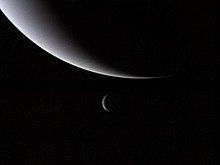

Scoperto la sera del 23 settembre 1846 da Johann Gottfried Galle con il telescopio dell'Osservatorio astronomico di Berlino, e Heinrich Louis d'Arrest, uno studente di astronomia che lo assisteva, Nettuno fu il primo pianeta ad essere stato trovato tramite calcoli matematici più che attraverso regolari osservazioni: cambiamenti insoliti nell'orbita di Urano indussero gli astronomi a credere che vi fosse, all'esterno, un pianeta sconosciuto che ne perturbava l'orbita. Il pianeta fu scoperto entro appena un grado dal punto previsto. La luna Tritone fu individuata poco dopo, ma nessuno degli altri tredici satelliti naturali di Nettuno fu scoperto prima del XX secolo. Il pianeta è stato visitato da una sola sonda spaziale, la Voyager 2 che transitò vicino ad esso il 25 agosto 1989.
 Nettuno ha una composizione simile a quella di Urano ed entrambi hanno composizioni differenti da quelle dei più grandi pianeti gassosi Giove e Saturno. Per questo sono talvolta classificati in una categoria separata, i cosiddetti "giganti ghiacciati". L'atmosfera di Nettuno, sebbene simile a quelle sia di Giove che di Saturno essendo composta principalmente da idrogeno ed elio, possiede anche maggiori proporzioni di "ghiacci", come acqua, ammoniaca e metano, assieme a tracce di idrocarburi e forse azoto. In contrasto, l'interno del pianeta è composto essenzialmente da ghiacci e rocce come il suo simile Urano. Le tracce di metano presenti negli strati più esterni dell'atmosfera contribuiscono a conferire al pianeta Nettuno il suo caratteristico colore azzurro intenso.
Nettuno possiede i venti più forti di ogni altro pianeta nel Sistema Solare. Sono state misurate raffiche a velocità superiori ai 2 100 km/h. All'epoca del sorvolo da parte della Voyager 2, nel 1989, l'emisfero sud del pianeta possedeva una Grande Macchia Scura comparabile con la Grande Macchia Rossa di Giove; la temperatura delle nubi più alte di Nettuno era di circa −218 °C, una delle più fredde del Sistema solare, a causa della grande distanza dal Sole. La temperatura al centro del pianeta è di circa 7000 °C, comparabile con la temperatura superficiale del Sole e simile a quella del nucleo di molti altri pianeti conosciuti. Il pianeta possiede inoltre un debole sistema di anelli, scoperto negli anni sessanta ma confermato solo dalla Voyager 2.
Nettuno ha una composizione simile a quella di Urano ed entrambi hanno composizioni differenti da quelle dei più grandi pianeti gassosi Giove e Saturno. Per questo sono talvolta classificati in una categoria separata, i cosiddetti "giganti ghiacciati". L'atmosfera di Nettuno, sebbene simile a quelle sia di Giove che di Saturno essendo composta principalmente da idrogeno ed elio, possiede anche maggiori proporzioni di "ghiacci", come acqua, ammoniaca e metano, assieme a tracce di idrocarburi e forse azoto. In contrasto, l'interno del pianeta è composto essenzialmente da ghiacci e rocce come il suo simile Urano. Le tracce di metano presenti negli strati più esterni dell'atmosfera contribuiscono a conferire al pianeta Nettuno il suo caratteristico colore azzurro intenso.
Nettuno possiede i venti più forti di ogni altro pianeta nel Sistema Solare. Sono state misurate raffiche a velocità superiori ai 2 100 km/h. All'epoca del sorvolo da parte della Voyager 2, nel 1989, l'emisfero sud del pianeta possedeva una Grande Macchia Scura comparabile con la Grande Macchia Rossa di Giove; la temperatura delle nubi più alte di Nettuno era di circa −218 °C, una delle più fredde del Sistema solare, a causa della grande distanza dal Sole. La temperatura al centro del pianeta è di circa 7000 °C, comparabile con la temperatura superficiale del Sole e simile a quella del nucleo di molti altri pianeti conosciuti. Il pianeta possiede inoltre un debole sistema di anelli, scoperto negli anni sessanta ma confermato solo dalla Voyager 2.
L'atmosfera di Nettuno è suddivisa in due regioni principali: la bassa troposfera, dove la temperatura decresce con l'altitudine, e la stratosfera, dove la temperatura aumenta con l'altitudine; il confine fra le due, la tropopausa si trova a circa 0,1 bar. La stratosfera dunque è seguita dalla termosfera alla pressione inferiore a 10−4−10−5 µbar. L'atmosfera sfuma gradualmente verso l'esosfera. modelli suggeriscono che la troposfera di Nettuno sia attraversata da nubi di varia composizione a seconda dell'altitudine. Il livello superiore di nubi si trova a pressioni inferiori a 1 bar dove la temperatura è adatta alla condensazione del metano. Con pressioni fra 1 e 5 bar si crede si formino nubi di ammoniaca e acido solfidrico; oltre i 5 bar di pressione, le nubi potrebbero essere costituite da ammoniaca, solfato d'ammonio ed acqua. Le nubi più profonde di ghiaccio d'acqua potrebbero formarsi a pressioni attorno ai 50 bar, dove la temperatura raggiunge gli 0 °C. Sotto ancora si potrebbero trovare delle nubi di ammoniaca e acido solfidrico. Sono state osservate nubi d'alta quota su Nettuno che formano delle ombre sopra l'opaco manto nuvoloso sottostante. Ci sono anche delle bande di nubi d'alta quota che circondano il pianeta a latitudini costanti; queste bande disposte a circonferenza hanno degli spessori di 50-150 km e si trovano a circa 50-110 km sopra il manto nuvoloso sottostante.  Lo spettro di Nettuno suggerisce che i suoi strati atmosferici inferiori siano nebbiosi a causa della concentrazione di prodotti della fotolisi ultravioletta del metano, come etano e acetilene; l'atmosfera contiene anche tracce di monossido di carbonio e acido cianidrico. La stratosfera del pianeta è più tiepida di quella di Urano a causa dell'elevata concentrazione di idrocarburi. Per ragioni ancora non conosciute la termosfera planetaria possiede una temperatura insolitamente alta, pari a circa 750 K. Il pianeta è troppo lontano dal Sole perché il calore sia generato dalla radiazione ultravioletta; una possibilità per spiegare il meccanismo di riscaldamento è l'interazione atmosferica fra ioni nel campo magnetico del pianeta. Un'altra possibile causa è data dalle onde di gravità dall'interno che si disperdono nell'atmosfera. La termosfera contiene tracce di diossido di carbonio ed acqua, che potrebbero provenire da sorgenti esterne, come meteoriti e polveri. Il tempo meteorologico di Nettuno è caratterizzato da sistemi tempestosi estremamente dinamici, con venti che raggiungono la velocità supersonica di 600 m/s. Più tipicamente, tracciando il movimento delle nubi persistenti, la velocità del vento sembra variare dai 20 m/s in direzione est fino ai 235 m/s in direzione ovest. Sulla cima delle nubi, i venti predominanti variano in velocità dai 400 m/s lungo l'equatore ai 250 m/s sui poli. Molti dei venti di Nettuno si muovono in direzione opposta rispetto alla rotazione del pianeta. Il livello generale dei venti mostra una rotazione prograda alle alte latitudini e retrograda alle basse latitudini; si ritiene che la differenza della direzione dei flussi ventosi sia un effetto superficiale e non dovuto ad alcun processo atmosferico più profondo. A 70° S di latitudine, un getto ad alta velocità viaggia a 300 m s−1. L'abbondanza di metano, etano e acetilene all'equatore di Nettuno è 10–100 volte superiore di quella dei poli; ciò è interpretato come un'evidenza della presenza di fenomeni di risalita all'equatore e di subsidenza verso i poli. Nel 2007 fu scoperto che gli strati superiori della troposfera del polo sud di Nettuno erano di circa 10 °C più tiepidi che nel resto del pianeta, con una media di circa −200 °C. Il differenziale di calore è sufficiente per consentire al gas metano, che in altri punti si gela nell'alta atmosfera del pianeta, di essere espulso verso lo spazio. Il relativo "hot spot" è dovuto all'inclinazione dell'asse di Nettuno, che ha esposto il polo sud al Sole per l'ultimo quarto di anno nettuniano, pari a circa 40 anni terrestri; similmente a quanto avviene nella Terra, l'alternanza delle stagioni farà in modo che il polo esposto al Sole sarà in seguito il polo nord, causando così il riscaldamento e la successiva emissione di metano dall'atmosfera in quest'ultimo polo. A causa del cambiamento stagionale, le bande di nubi dell'emisfero sud di Nettuno sono aumentate in dimensioni e albedo; questo processo fu osservato inizialmente nel 1980 e ci si aspetta che finirà attorno al 2020. Il lungo periodo orbitale di Nettuno causa un alternarsi stagionale in quarant'anni.
© Copyright "Astronomy", 2018